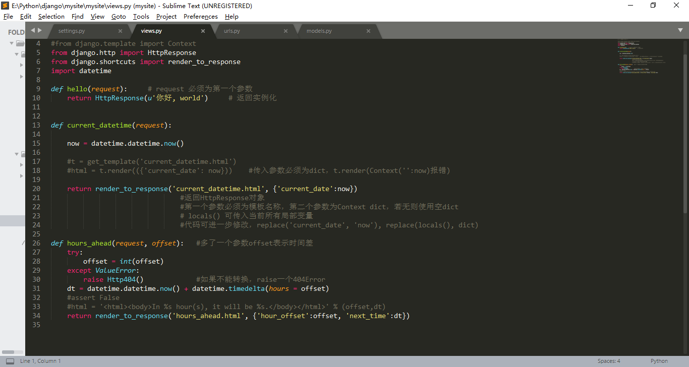

第二章
创建一个项目：
>django-admin.py startproject mysite
运行服务器：
>python manage.py runserver
第三章 视图和URL配置
创建 view.py （视图）：
编写 views.py（动态内容） :

绑定视图函数和URL
修改urls.py（配置松耦合，动态url）:

查看网站根目录使用空re:
url(r'^$', my_homepage_view)
第四章 模板（Template）
{{ person_name }} 变量(variable)
{% if ordered_warranty %} 模板标签(template tag)
{{ship_date|date:"F j, Y"}} filter过滤器
创建Template对象：直接将其实例化
>>> from django.template import Template
>>> t = Template('My name is {{ name }}.')
context在Django里表现为 Context 类，在 django.template 模块里。 她的构造函数带有一个可选的参数： 一个字典映射变量和它们的值。 调用 Template 对象 的 render() 方法并传递context来填充模板：
>>> from django.template import Context, Template
#context在Django里表现为 Context 类，在 django.template 模块里
>>> t = Template('My name is {{ name }}.')
>>> c = Context({'name': 'Stephane'})
#字典映射 变量 和 值
>>> t.render(c)
u'My name is Stephane.
在 Django 模板中遍历复杂数据结构的关键是句点字符 (.)
>>> from django.template import Template, Context
>>> person = {'name': 'Sally', 'age': '43'}
>>> t = Template('{{ person.name }} is {{ person.age }} years old.')
>>> c = Context({'person': person})
>>> t.render(c)
u'Sally is 43 years old.'
句点查找可以多级深度嵌套。 例如在下面这个例子中 {{person.name.upper}} 会转换成字典类型查找（ person['name'] ) 然后是方法调用（ upper() ):
>>> from django.template import Template, Context
>>> person = {'name': 'Sally', 'age': '43'}
>>> t = Template('{{ person.name.upper }} is {{ person.age }} years old.')
>>> c = Context({'person': person})
>>> t.render(c)
u'SALLY is 43 years old.'
标签{% blah %}：
注释{# blah #}：
过滤器{{ name|lower }} :
模板加载：
修改settings.py:

（修改views.py:）且慢！还有更好的方法！
django.template.loader.get_template() #自动加载模板
在template中创建模板current_datetime.html：
render_to_response()
from django.shortcuts import render_to_response
import datetime
def current_datetime(request):
now = datetime.datetime.now()
return render_to_response('current_datetime.html', {'current_date': now})
不再需要导入 get_template 、 Template 、 Context 和 HttpResponse 。相反，导入 django.shortcuts.render_to_response
locals() 技巧
模板继承：{% extends %} {% block %}
base.html

current_datetime.html

hours_ahead.html

如果需要访问父模板中的块的内容，使用 {{ block.super }}，这一个魔法变量将会表现出父模板中的内容。 如果只想在上级代码块基础上添加内容，而不是全部重载，该变量就显得非常有用了。
第5章 模型（Models）
修改setings.py:

shell中检测数据库配置 ：
>>> from django.db import connection
>>> cursor = connection.cursor()
创建"books"app:
python manage.py startapp books
编写models.py:

修改settings.py:

验证模型有效型：
python manage.py check
返回0 errors found
生成create table:
>python manage.py makemigrations books
#用来检测数据库变更和生成数据库迁移文件
>python manage.py sqlmigrate books 0001
#用来把数据库迁移文件转换成数据库语言
>python manage.py migrate
#用来迁移数据库
基本数据访问：
>>> from books.models import Publisher
>>> p1 = Publisher(name='Apress', address='2855 Telegraph Avenue',
... city='Berkeley', state_province='CA', country='U.S.A.',
... website='http://www.apress.com/')
>>> p1.save()
>>> p2 = Publisher(name="O'Reilly", address='10 Fawcett St.',
... city='Cambridge', state_province='MA', country='U.S.A.',
... website='http://www.oreilly.com/')
>>> p2.save()
>>> publisher_list = Publisher.objects.all()
>>> publisher_list
<QuerySet [<Publisher: Publisher object>, <Publisher: Publisher object>]>
.save 或用 objects.create() 方法:
>>> p1 = Publisher.objects.create(name='Apress',
... address='2855 Telegraph Avenue',
... city='Berkeley', state_province='CA', country='U.S.A.',
... website='http://www.apress.com/')
>>> p2 = Publisher.objects.create(name="O'Reilly",
... address='10 Fawcett St.', city='Cambridge',
... state_province='MA', country='U.S.A.',
... website='http://www.oreilly.com/')
>>> publisher_list = Publisher.objects.all()
>>> publisher_list
每个models模块添加方法__str__()：
def __str__(self):
return self.name
输出结果对比：
<QuerySet [<Publishier: object>, <Publishier: object>]>
<QuerySet [<Publishier: O'Reilly>, <Publishier: Apress>]>
插入和更新数据：
>>> p.name = 'Apress Publishing'
>>> p.save()
选择对象：
>>> Publisher.objects.all()
<QuerySet [<Publishier: Apress>, <Publishier: O'Reilly>]>
数据过滤：
filter():
>>> Publisher.objects.filter(name='Apress')
[<Publisher: Apress>]
可传入多个参数：
>>> Publisher.objects.filter(country="U.S.A.", state_province="CA")
[<Publisher: Apress>]
__contains:
>>> Publishier.objects.filter(name__contains="press")
[<Publisher: Apress>]
获取单个对象：
get():
>>> Publisher.objects.get(name="Apress")
<Publisher: Apress>
filter()和get():
>>> type(Publishier.objects.filter(name='Apress'))
<class 'django.db.models.query.QuerySet'>
>>> type(Publishier.objects.get(name='Apress'))
<class 'books.models.Publishier'>
数据排序：
order_by():
>>> Publisher.objects.order_by("name")
[<Publisher: Apress>, <Publisher: O'Reilly>]
可对任意字段：
>>> Publisher.objects.order_by("address")
[<Publisher: O'Reilly>, <Publisher: Apress>]
>>> Publisher.objects.order_by("state_province")
[<Publisher: Apress>, <Publisher: O'Reilly>]
逆向：
>>> Publisher.objects.order_by("-name")
[<Publisher: O'Reilly>, <Publisher: Apress>]
重复排序可定义 class Meta：
class Meta:
ordering = ['name']
连锁查询：
>>> Publisher.objects.filter(country="U.S.A.").order_by("-name")
[<Publisher: O'Reilly>, <Publisher: Apress>]
限制返回数据：
>>> Publisher.objects.order_by('name')[0]
<Publisher: Apress>
>>> Publisher.objects.order_by('name')[0:2]
>>> Publisher.objects.order_by('-name')[0]
更新多个对象：
>>> p = Publisher.objects.get(name='Apress')
>>> p.name = 'Apress Publishing'
>>> p.save()
>>>
>>> #假设id为52
>>> Publisher.objects.filter(id=52).update(name='Apress Publishing')
>>>
>>>>>> Publisher.objects.all().update(country='USA')
2
删除对象：
delete():
>>> p = Publisher.objects.get(name="O'Reilly")
>>> p.delete()
>>> Publisher.objects.all()
[<Publisher: Apress Publishing>]
>>>
>>> Publisher.objects.filter(country='USA').delete()
>>> Publisher.objects.all().delete()
第六章 Django站点管理
激活管理界面：
修改settings.py:

创建超级用户：
>python manage.py migrate
>python manage.py createsuperuser
...
Superuser created successfully.
（只有包含'django.contrib.auth'才可createsuperuser）
将admin访问配置在URLconf(urls.py)：
貌似新版这里不用修改

使用管理工具
更改管理页面语言：
‘django.middleware.locale.LocaleMiddleware’
确保其在'django.contrib.sessions.middleware.SessionMiddleware'之后
将Models加入到Admin管理中
编辑admin.py:

设置字段可选：
设置Author中eamail字段为可选：（修改models.py）
email = models.EmailField(blank = True) #该字段可选
email不再为粗体：

设置日期型和数字型字段可选：
在Django模块中，你可以通过添加null=True来指定一个字段允许为NULL
如果想允许一个日期型（DateField、TimeField、DateTimeField）或数字型（IntegerField、DecimalField、 FloatField）字段为空，需要使用null=True 和 blank=True。
publication_date = models.DateField(blank = True, null = True) #允许字段为空
自定义字段标签：使用 verbose_name :
email = models.EmailField(blank = True, verbose_name = 'e-mail')
或
email = models.EmailField('e-mail', blank = True )
ManyToManyField 和 ForeinKey 不可用，因为第一个参数是模块类名
自定义ModelAdmi类：
ModelAdmin classes
自定义列表：
为Author模块定义一个ModelAdmin类
修改admin.py：
添加快速查询栏：
修改admin.py：
在 class AuthorAdmin(admin.ModelAdmin) 中添加 search_fields：
class AuthorAdmin(admin.ModelAdmin):
#从django.contrib.admin.ModelAdmin派生出来的子类
list_display = ('first_name', 'last_name', 'email')
search_fields = ('first_name', 'last_name')

为Book添加过滤器：

另一种过滤日期的方法是date_hierachy：
date_hierarchy = 'publication_date'
排序
ordering = (-publication_date)
自定义编辑表单：
fileds = ('title', 'author', 'publishier', 'publication_date')
多选框不方便
ManyToMany 使用 filter_horizontal：
添加到 BookAdmin 中：
filter_horizontal = ('authors',)
注意移除fields选项，以使得编辑页面包含所有字段
filter_vertical控件垂直排列
ForeinKey 使用 raw_id_fields：（展现为文本框而不是下拉框）
用户、用户组 和 权限：
第七章 表单
从 Request 对象中获取数据：
每个view函数的第一个参数是一个HttpRequest对象
URL相关信息：
HttpRequest 对象包含当前请求URL的一些信息：

有关 request 的其他信息：
rquest.META 是一个 dict，包含Header信息，以下常见键值：
HTTP_REFERER 进站前链接网页，如果有的话
HTTP_USER_AGENT user-agent字符串
REMOTE_ADDR 客户端IP